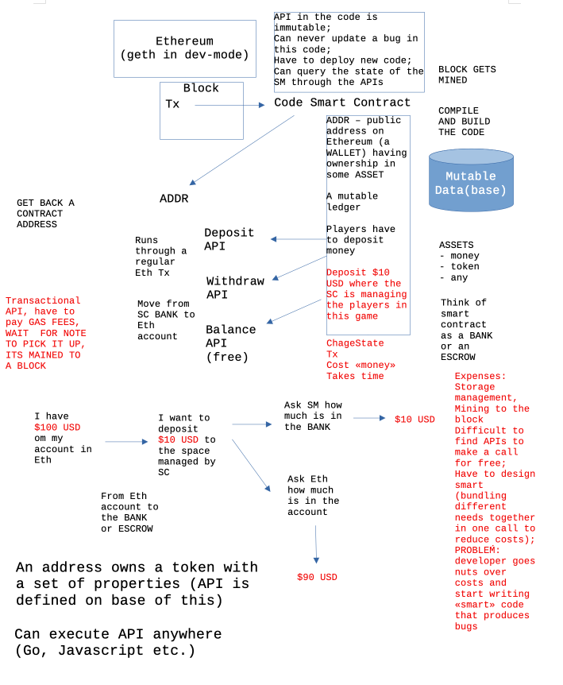

Lecture 3 notes
ICA 3
ICA - In-Class Activity
Consensus
Consensus, - one of the basic problems in all human societies? Can it be "digitalized"?
Have your ever thought ...
https://www.youtube.com/watch?v=hxPtXHK3tLM
https://trufflesuite.com/docs/truffle/
Notes
Playing in Eth with an unprotected way.
Look into log "Submitting transaction" (happens immediately locally)
Everything is in makefile
https://ethereum.org/en/developers/docs/apis/json-rpc/#json-rpc-methods
Escrow - a type of legal holding account for items, which can't be released until predetermined conditions are satisfied.
Tools
Worldview from Bunge (2001)

Figure 1. A world view by Bunge (2001) on basic and applied science, and technology.
Repository to learn about Ethereum and implementation of smart contracts:
https://github.com/ardanlabs/smartcontract
Get Go for your peer https://go.dev/dl/
DevOps
Starting with development environment
> Running Ethereum locally in DEV mode > Write a smart contract (as a package in go / package represents an api in applications) > Deploy API (Package) on Ethereum in some Block that gets mined > Imagine a Transaction (Tx) in the Block > In Transaction's data will be code for the Smart Contract > Able to attach > Coinbase account > Can move money from account to account
Figure 2. Kennedy drawing from video.
Links
- https://www.wired.com/story/us-treasury-crypto-mixer-hamas/
- https://www.wired.com/story/sam-bankman-frieds-lawyers-are-doing-just-fine-actually/
- https://ethereum.org/en/developers/docs/apis/json-rpc/#json-rpc-methods
- https://www.youtube.com/watch?v=3yrqBG-7EVE
References
- Arnesen, M. (2023, October 10). Eksperter mener dømt NTNU-professor drev med grunnforskning. Khrono.no; Khrono.no. https://khrono.no/eksperter-mener-domt-ntnu-professor-drev-med-grunnforskning/816599 (Arnesen, 2023)
- Buhari Ugbede Umar, Olayemi Mikail Olaniyi, Daniel Oluwaseun Olajide, & Dogo, E. M. (2022). Paillier Cryptosystem Based ChainNode for Secure Electronic Voting. Frontiers in Blockchain, 5. https://doi.org/10.3389/fbloc.2022.927013 (Buhari Ugbede Umar et al., 2022)
- Bunge, M. (2001). Scientific Realism. Amherst, N.Y. : Prometheus Books. (Bunge, 2001)
- Chachra, Deb. How Infrastructure Works. Penguin, 17 Oct. 2023. (Chachra, 2023)
- Christie, A. (2020). Can Distributed Ledger Technologies Promote Trust for Charities? A Literature Review. Frontiers in Blockchain, 3. https://doi.org/10.3389/fbloc.2020.00031 (Christie, 2020)
- Descartes, R. (2009). Discourse on the method of rightly conducting the reason, and seeking truth in the sciences. Annals of Neurosciences, 16(2), 57–61. https://doi.org/10.5214/ans.0972.7531.2009.160207 (Descartes, 2009)
- Going Infinite: The Rise and Fall of a New Tycoon: Lewis, Michael: 9781324074335: Amazon.com: Books. (2023). Amazon.com. https://www.amazon.com/Going-Infinite-Rise-Fall-Tycoon/dp/1324074337 (Going Infinite: The Rise and Fall of a New Tycoon: Lewis, Michael: 9781324074335: Amazon.com: Books, 2023)
- Home | Dungeons & Dragons Online. (2023). Dungeons & Dragons Online. https://www.ddo.com/home (Home | Dungeons & Dragons Online, 2023)
- Lo, S. K., Xu, X., Chiam, Y., and Lu, Q. (2017). “Evaluating Suitability of Applying Blockchain,” in 2017 22nd International Conference on Engineering of Complex Computer Systems (ICECCS), Fukuoka, Japan, November 5–8, 2017. (IEEE), 158–161. doi:10.1109/ICECCS.2017.26 (Lo et al., 2017)
- McNealy, J. E. (2021). Editorial: Special Issue: Theories and Applications of Emerging Technologies in Civic Engagement. Frontiers in Blockchain, 4. https://doi.org/10.3389/fbloc.2021.699130 (McNealy, 2021)
- Primavera. (2018). Blockchain and the Law. Harvard University Press. (Primavera, 2018)
- Science of Blockchain Conference 2022. (2022). Stanford.edu. https://cbr.stanford.edu/sbc22/
- Storybook Brawl på Steam. (2022). Steampowered.com. https://store.steampowered.com/app/1367020/Storybook_Brawl/ (Storybook Brawl På Steam, 2022)
- Wikipedia Contributors. (2023a, October 13). ARPANET. Wikipedia; Wikimedia Foundation. https://en.wikipedia.org/wiki/ARPANET#cite_note-LIARPANETTheFirstInternet-1 (Wikipedia Contributors, 2023a)
- Wüst, K., and Gervais, A. (2018). “Do you Need a Blockchain?,” in 2018 Crypto Valley Conference on Blockchain Technology (CVCBT), Zug, Switzerland, June 20–22, 2018. (IEEE), 45–54. doi:10.1109/CVCBT.2018.00011 (Wüst and Gervais, 2018, p. 46)
- Yaga, D., Mell, P., Roby, N., and Scarfone, K. (2018). Blockchain Technology Overview. arXiv. doi:10.6028/NIST.IR.8202 (Yaga et al., 2018)
- Yann Aouidef, Ast, F., & Deffains, B. (2021). Decentralized Justice: A Comparative Analysis of Blockchain Online Dispute Resolution Projects. Frontiers in Blockchain, 4. https://doi.org/10.3389/fbloc.2021.564551 (Yann Aouidef et al., 2021)